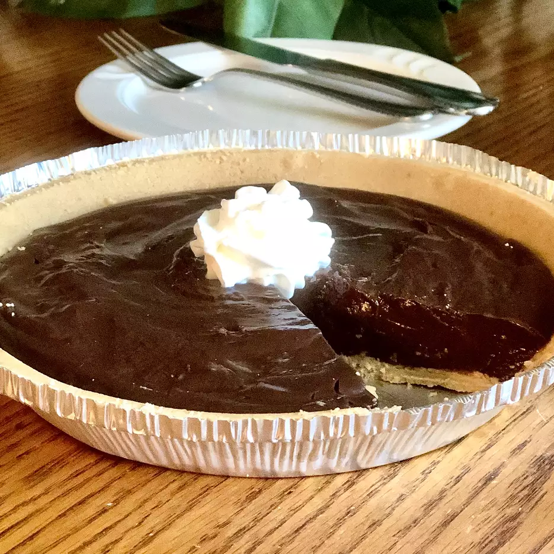

Vegan Chocolate Pie

Ingredients
- 2 cups almond milk
- 1 (5 ounce) package non-instant chocolate pudding mix
- ¼ cup vegan chocolate chips
- 1 vegan graham cracker crust
- ½ cup vegan whipped cream (Optional)
Steps
- Combine almond milk and pudding mix in a saucepan and bring to a boil, stirring constantly, over medium heat.
- As soon as pudding boils, reduce heat to low and continue cooking and stirring until pudding thickens, about 5 minutes.
- Remove from heat and stir in chocolate chips until melted.
- Pour into graham crust and refrigerate until set, about 2 hours.
- Top with vegan whipped cream.
Return to homepage